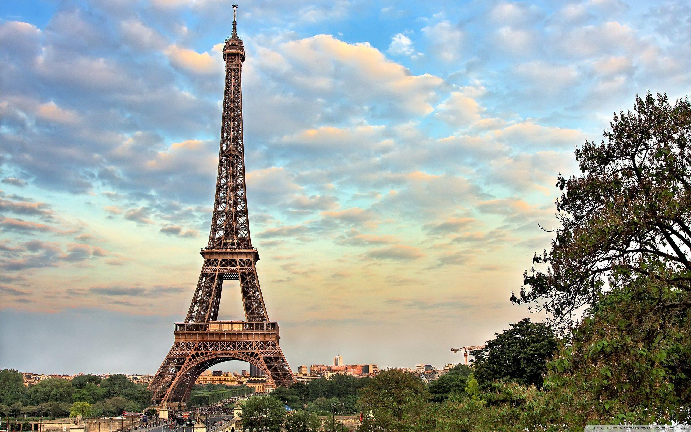
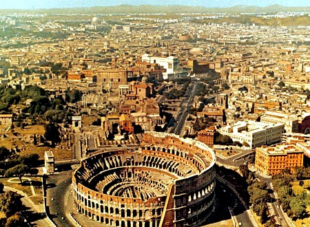
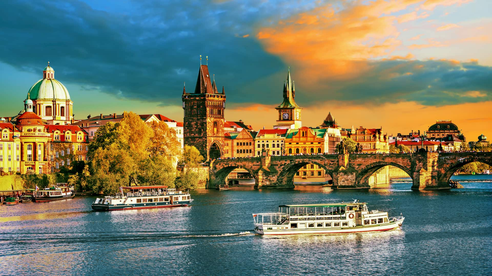

Paris, França
Paris é conhecida como a Cidade Luz e é famosa pela Torre Eiffel, o Louvre e a Catedral de Notre-Dame.
Roma, Itália
Roma é a cidade eterna, repleta de história e arquitetura impressionante, incluindo o Coliseu e o Pantheon.
Barcelona, Espanha
Barcelona oferece praias deslumbrantes, a famosa Sagrada Família e uma cena gastronômica vibrante.

Atenas, Grécia
Atenas é o berço da civilização grega, com monumentos históricos como o Partenon e a Acrópole.

Praga, República Tcheca
Praga é conhecida por sua arquitetura medieval, incluindo a Ponte Carlos e o Castelo de Praga.
